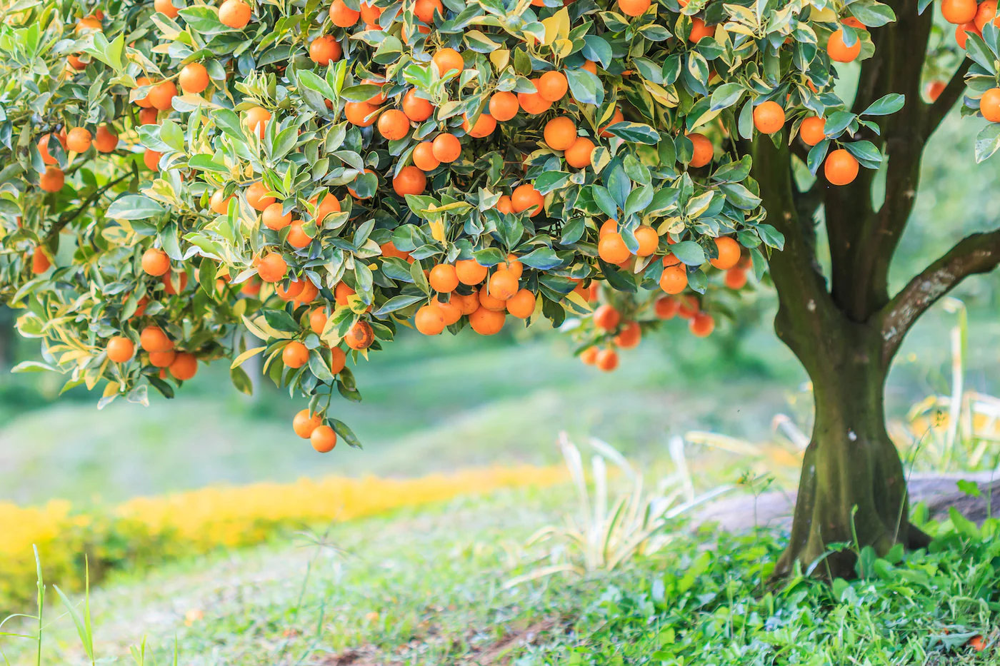
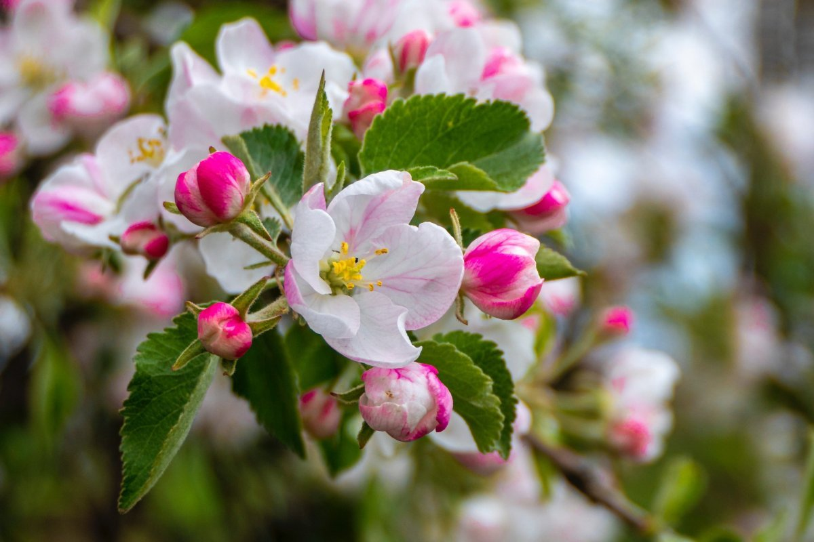
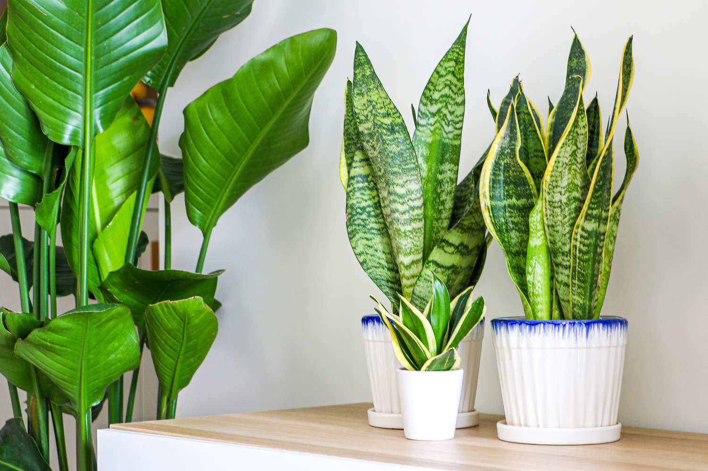
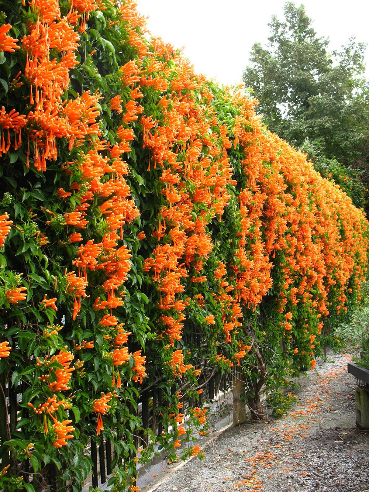

Established 1995 · Kadiam, Andhra Pradesh
From Nursery to Nature – Plants That Transform Spaces
Based in Kadiam, Andhra Pradesh, supplying quality plants across India.
Our Collection
Plant Categories
Explore our wide range of nursery-grown plants for farms, layouts, resorts, and landscapes.




Climbers & Ground Covers
Decorative climbing and spreading plants for landscape coverage.
View Plants
Why Choose Us
Trusted Nursery, Proven Results
Decades of agricultural expertise delivering healthy plants to projects across India.
-
30+ Years Agricultural Experience
-
15 Acre Nursery
-
500+ Plant Varieties
-
1 Cr+ Plants Supplied Every Year Plants Supplied
-
Supply Across India
-
Healthy Nursery-Grown Plants
Miyazaki Mango in India: Is It Really Worth Growing? What Farmers Should Know Before Buying a Plant
A practical look at Miyazaki mango cultivation in India — the real economics, growing conditions, and what farmers should verify before investing in saplings.
Read MoreTotapuri Mango Farmers in 2026: What Changing Markets Mean Before Planting
Totapuri remains an important mango variety in South India, but recent market pressure shows why farmers should evaluate buyers, processing demand, planting material, and orchard economics before expanding.
Read MoreSmart Orchard Management in 2026: How Sensors and Better Irrigation Can Help Mango and Guava Growers
Smart orchard systems are moving from an idea to a practical management tool. Here is what mango and guava growers should know before investing in sensors, irrigation and farm monitoring.
Read MoreLooking for Quality Plants?
Get in touch with our nursery team for enquiries, bulk orders, and project quotes.